Fable에선 '코드 주인' 문장이 양날의 칼이에요
앤트로픽은 Opus 5.5와 Fable 5.2의 프롬프트 가이드를 따로 냈어요. 둘을 나란히 읽으면 한 모델에 잘 듣던 지시가 다른 모델에선 방해가 되는 경우가 보여요. 영상은 이 차이를 골라서 각 모델에 넣을 지시와 뺄 지시로 정리해요.
출발점부터 달라요. 왼쪽 Opus 5.5 가이드 첫 화면은 기존 Opus 5 프롬프트가 바꾸지 않아도 잘 동작한다고 적어요. 오른쪽 Fable 5.2 가이드는 이전 모델에 맞춰 쓴 프롬프트와 하네스부터 다시 검토하라고 해요.
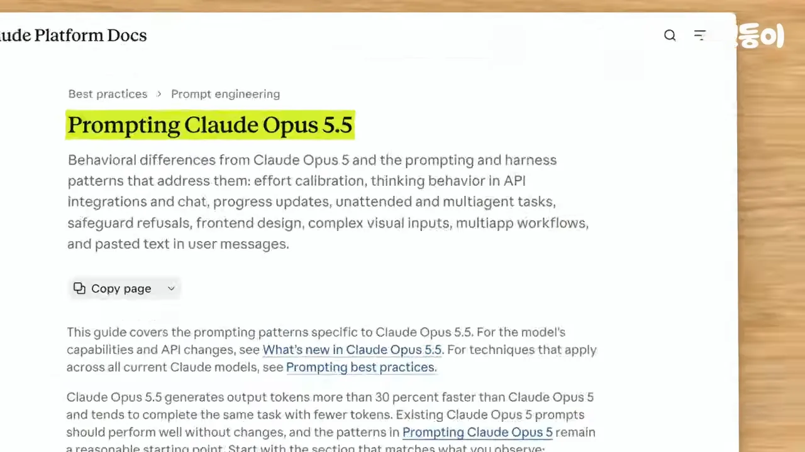

새 코드를 덧붙이는 Fable
Fable 가이드가 따로 강조하는 건 코드 수정 방식이에요. Fable은 기존 프로젝트에 비슷한 코드가 있어도 고치기보다 새 코드를 덧붙이는 경향이 있었어요. 아래 cart.js에서 위쪽 formatPrice가 이미 '원' 표시를 하는데, 아래 cartTotal도 같은 toLocaleString('ko-KR') + '원'을 또 적고 있어요. 영상은 이런 줄이 함수마다 늘어나는 모습으로 이 경향을 보여 줘요.
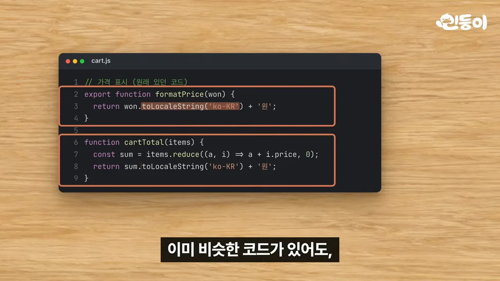
'주인' 문장 한 줄의 효과
이때 코드의 주인이 Fable이라고 정해 주면 결과가 달라져요. 공식 문서의 원문은 형광색으로 칠한 한 줄이에요.
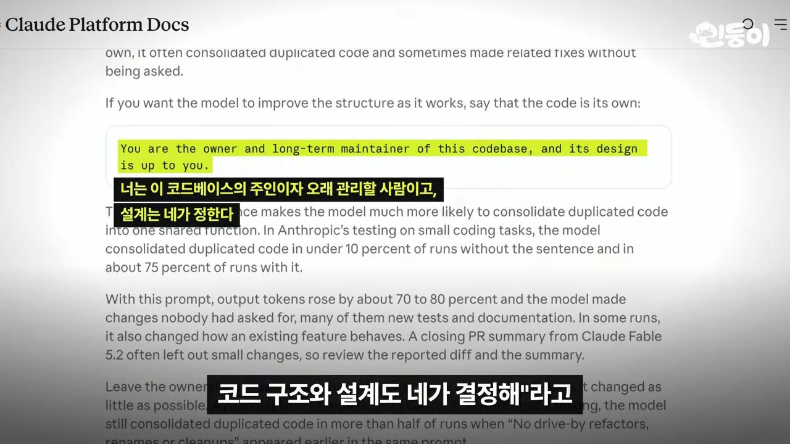
앤트로픽의 작은 코딩 과제 테스트에서, 중복 코드를 공통 함수 하나로 정리한 비율이 문장 없이는 10% 미만이었는데 문장을 넣자 약 75%가 됐어요. 막대그래프의 왼쪽 회색이 '문장 없음', 오른쪽 초록이 '문장 넣으면'이에요.

대신 값을 치러요. 출력 토큰이 70~80% 늘었고, 요청하지 않은 테스트나 문서를 만들거나 기존 기능의 동작을 바꾼 경우도 있었어요. "요청하지 않은 리팩터링이나 정리는 하지 마"를 함께 넣었는데도 절반이 넘는 실험에서 중복 코드를 정리해 버렸어요. 범위를 좁히는 규칙이 '주인' 문장을 이기지 못한 거예요.
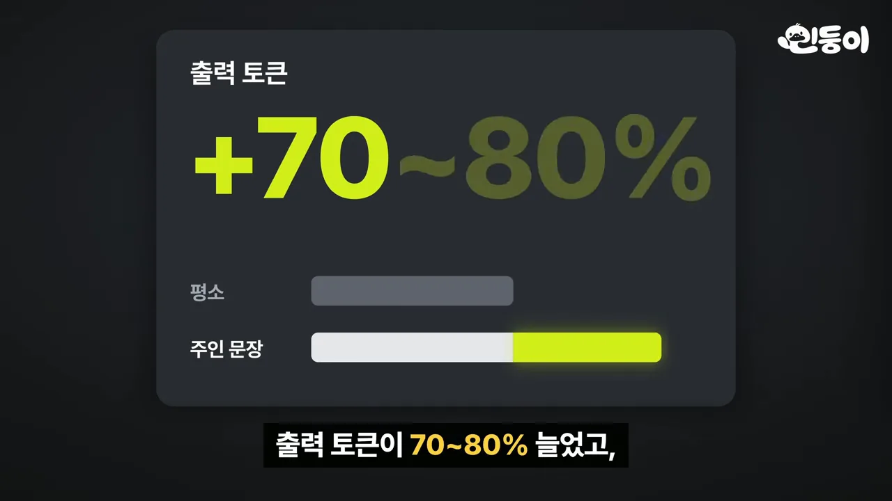
그래서 기존 구조까지 개선하고 싶을 때만 이 문장을 써요. 특정 기능만 고치거나 기존 코드를 최대한 지키고 싶다면 아예 빼요. 화면의 prompt.md에서 파란 두 줄을 빼고 '배송비 기준만 5만 원으로 올려 줘'만 남기는 장면이 그 경우예요.
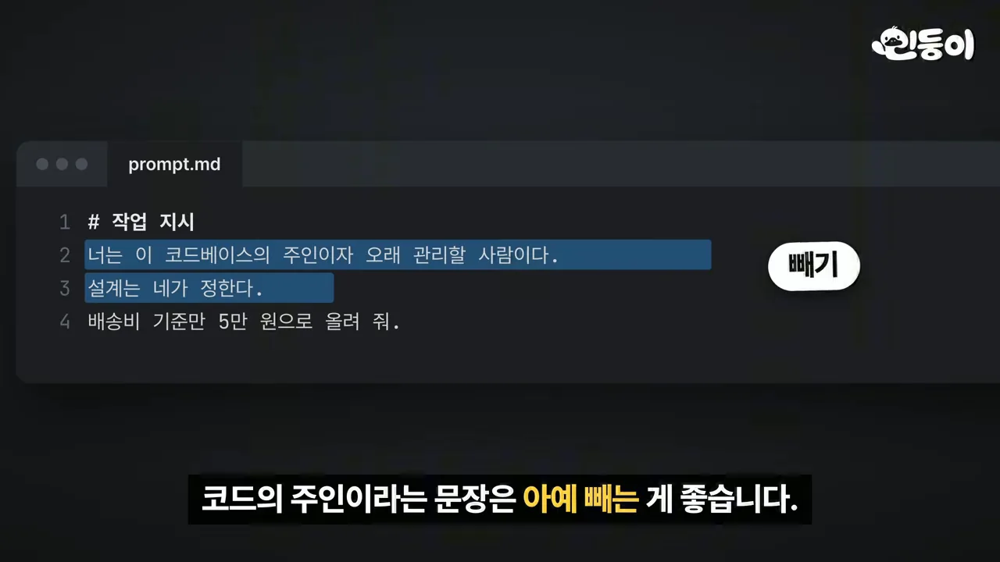
Fable에게 '절대'는 예외 없는 규칙이에요
Fable은 코드만이 아니라 메모리나 CLAUDE.md 같은 규칙 파일에 적힌 지시도 꼼꼼히 따라요. 특히 '절대'가 들어간 지시는 예외 없는 규칙으로 받아들여요. 아래 CLAUDE.md의 셋째 줄 "파일은 절대 삭제하지 마"에 '예외 없음' 딱지가 붙고, 오른쪽의 임시 파일·로그·캐시까지 모두 지우지 못하게 막혀요.
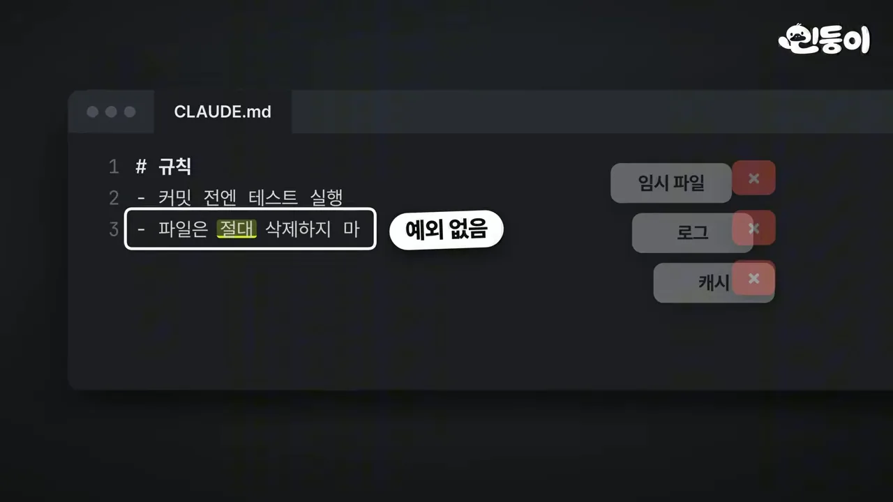
가이드는 "파일을 절대 삭제하지 마" 대신 "파일을 삭제하기 전에는 내 승인을 받아"처럼 허용되는 범위를 적으라고 해요.
승인 규칙도 너무 엄격하게 따라요
앤트로픽 테스트에서 "이 대화 밖의 사람에게 메시지를 보내려면 승인을 받아라"는 규칙을 넣었어요. 그러자 동료에게 보내는 평범한 업무 메시지까지 절반 가까이 보류했어요. 그림에서 '승인 대기' 앞에 메시지 세 개가 '보류' 딱지를 달고 쌓여 있고, 오른쪽 동료와 다른 팀으로는 나가지 못해요.
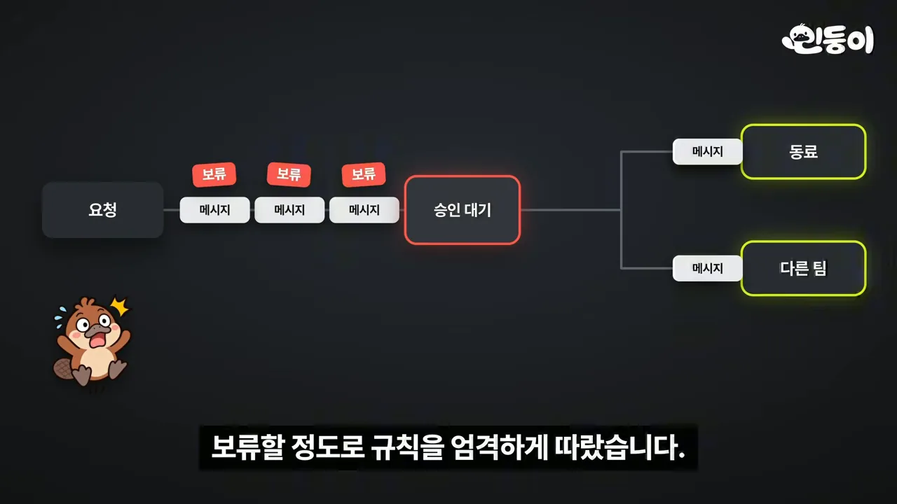
그렇다고 "알아서 진행해"처럼 막연하게 허락해도 효과가 크지 않았어요. 혼자 해도 되는 일과 승인이 필요한 일을 나눠 적는 게 좋아요. 아래 두 장이 같은 CLAUDE.md의 전과 후예요. 고치기 전에는 다섯 줄 중 네 줄이 '절대'로 시작해요.
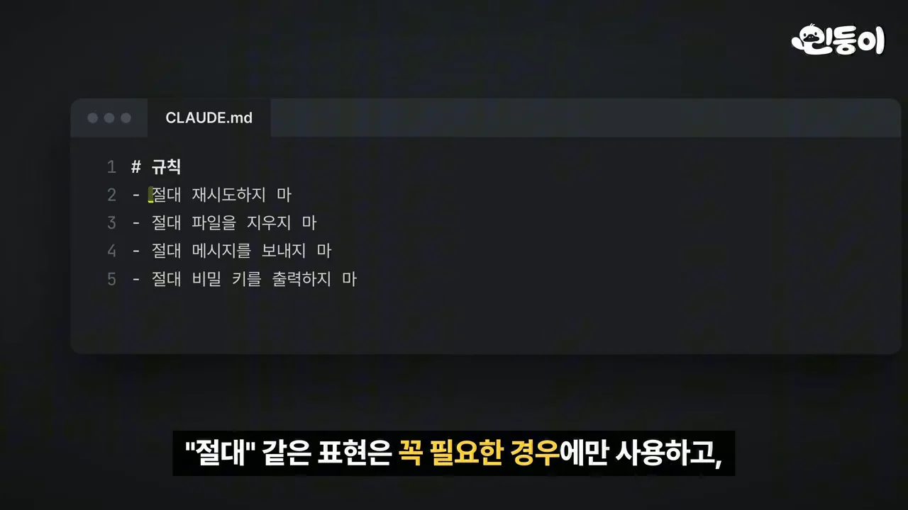
고친 뒤에는 앞의 세 줄이 '허용 범위'로 바뀌어요. 실패한 테스트는 다시 실행하고, 파일 삭제 전과 팀 밖 메시지만 확인을 받아요. '절대'는 비밀 키를 출력하지 말라는 마지막 한 줄에만 남겨요.

'이미 답한 건 다시 보지 마', Opus엔 약 Fable엔 독
이번엔 Opus에서 효과가 있었는데 Fable에선 문제가 된 지시예요. Opus 5.5는 간단한 질문에 답한 뒤 "그럼 예시도 알려줘" 같은 후속 질문을 받으면, 앞서 한 답까지 다시 검토하느라 시간이 오래 걸릴 때가 있어요. 그래서 Opus 가이드는 시스템 프롬프트 끝에 두 문장을 붙이라고 권해요. 아래 문서 화면에서 형광색으로 칠한 부분이에요.
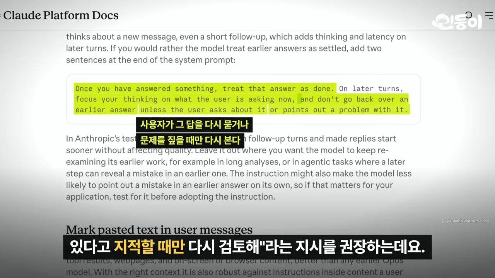
이미 답한 내용은 다시 검토하지 말고 새로운 질문에 집중해. 다만 내가 다시 확인해 달라고 하거나 이전 답변에 문제가 있다고 지적할 때만 다시 검토해
— 영상 02:48
Opus에서는 불필요하게 생각하는 시간이 줄어 답이 더 빨리 시작됐고, 품질도 크게 떨어지지 않았어요. 그런데 Fable 5.2에 같은 문장을 넣자 생각하는 양은 줄었지만, 앞 답에 오류가 있어도 스스로 찾아내는 경우가 크게 줄었어요. 아래 그림의 윗줄(흐리게 처리된 Opus)은 품질 막대가 전후로 같아요. 아랫줄 Fable은 '예시도?' 다음에 바로 새 답으로 넘어가고, 앞 답으로 돌아가는 화살표가 없어요.
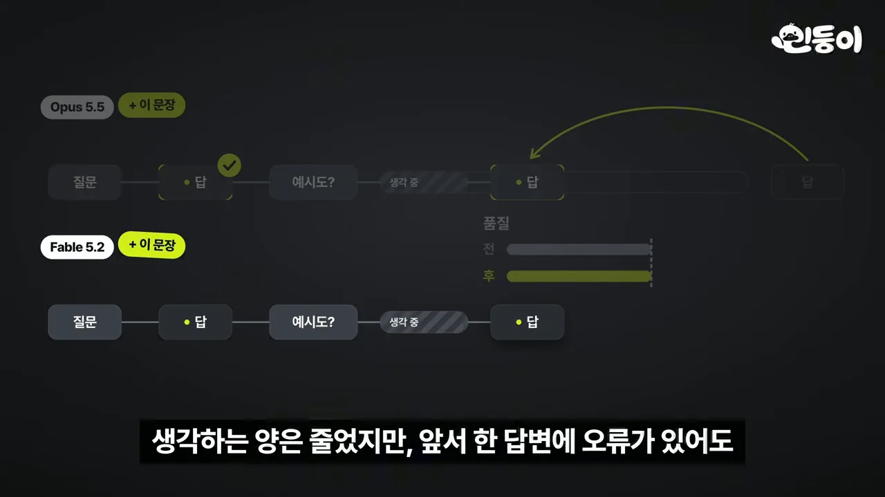
정리하면 이래요.
- Opus: 간단한 후속 질문에 빨리 답하는 게 중요하면 써 볼 만해요. 다만 Opus 가이드도 긴 분석이나 앞 단계의 오류를 찾아야 하는 작업에서는 쓰지 말라고 해요.
- Fable: 이전 답을 스스로 검토해야 하는 작업이면 빼요.
긴 작업이 중간에 멈출 때
긴 작업을 맡기면 할 일이 남았는데도 중간에 멈출 때가 있어요. 두 모델 모두 그렇지만, 멈추는 모양이 달라서 가이드가 권하는 해법도 달라요.
Opus 5.5: 말만 하고 멈춰요
Opus는 진행 상황을 보고하거나 "다음엔 이걸 하겠다"고 말한 뒤 실제로는 실행하지 않아요. 아래 agent-run.log에서 6번째 줄이 "다음엔 테스트를 고치겠습니다"인데, 바로 다음 줄에서 stop_reason: "end_turn"으로 턴이 끝나요. 그 아래 edit_file은 줄이 그어진 채 실행되지 않고, 오른쪽 할 일 목록도 '테스트'에서 멈춰 있어요.
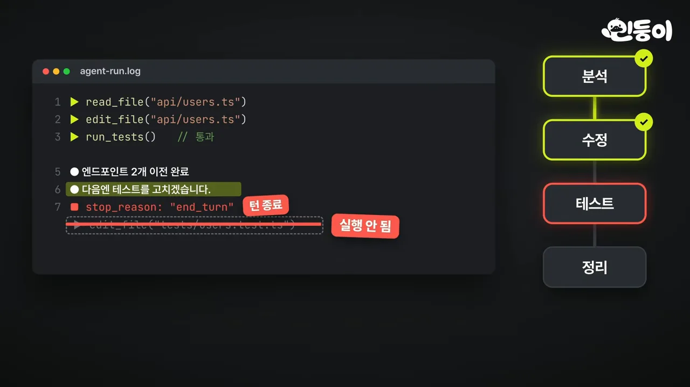
그래서 Opus 가이드는 할 일을 체크리스트로 관리하고, 피할 행동을 콕 집어 적으라고 해요. 예를 들면 "아직 끝내지 않은 작업이 있다면 다음 단계를 설명만 하지 말고 실제로 진행해" 같은 지시예요.
Fable 5.2: 묻거나 오류에서 멈춰요
Fable은 작업 중에 계속할지 묻거나, 타임아웃 같은 평범한 오류가 나면 그대로 멈춰요. 위쪽 줄은 조사·수정 뒤 '계속할까요?'를 묻느라 빌드와 테스트가 남아 있고, 아래쪽 줄은 API 호출 뒤에 수정과 테스트가 남아 있어요.
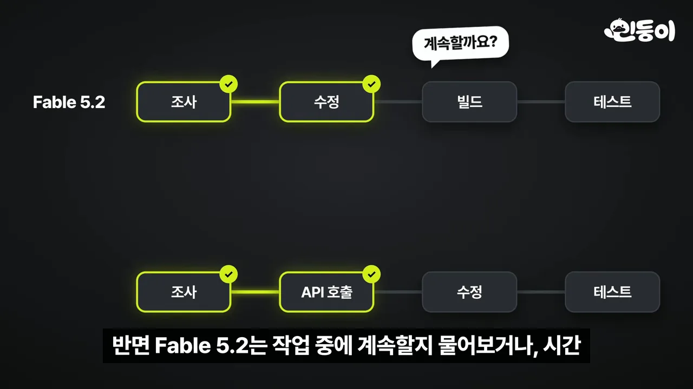
이때는 "아직 할 일이 남았다면 불필요하게 멈추지 말고 끝까지 진행해. 오류가 생기면 원인을 확인하고 해결할 방법을 찾아 계속해"라고 지시해요. 앤트로픽 테스트에서 더 진행할 수 있었는데도 멈춘 경우가 약 절반으로 줄었어요. 대신 출력 토큰은 약 30% 더 썼어요.
아래 비교 화면이 두 해법을 나란히 보여 줘요. 왼쪽 Opus는 '다음엔 할게요'에 줄을 긋고 수정·테스트·정리를 끝까지 해내요. 오른쪽 Fable은 API 호출 뒤 '계속할까요?'에서 멈춰 있던 장면이에요.

Opus엔 자료 탐색과 디자인 금지 목록을 구체적으로
마지막은 Opus 5.5 가이드가 따로 강조하는 두 가지예요. 둘 다 '구체적으로 시켜라'로 요약돼요.
시작하기 전에 자료부터 훑게 해요
Opus는 작업을 빨리 시작하는 편이라, 여러 앱에 흩어진 중요한 정보를 놓칠 때가 있어요. 영상의 예는 매출 보고서예요. 왼쪽 위 받은편지함에 '정산 기준 변경 안내' 메일이 있는데, 이걸 읽지 않고 보고서를 써 버리는 식이에요.
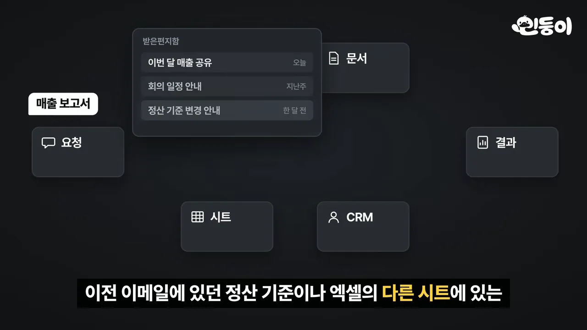
엑셀의 다른 시트에 있는 계산 규칙도 마찬가지예요. 그래서 가이드는 "작업을 시작하기 전에 관련 이메일과 문서, 스프레드시트의 다른 시트까지 확인하고, 내가 언급하지 않은 자료에서도 필요한 정보를 찾아 써"라고 지시하라고 해요. 아래 그림에서 요청이 메일·문서·시트로 뻗어 가고, 시트 안의 '매출 규칙'이 표시돼 있어요. 오른쪽 CRM(Customer Relationship Management)에는 '언급 안 함' 딱지가 붙어 있어요.
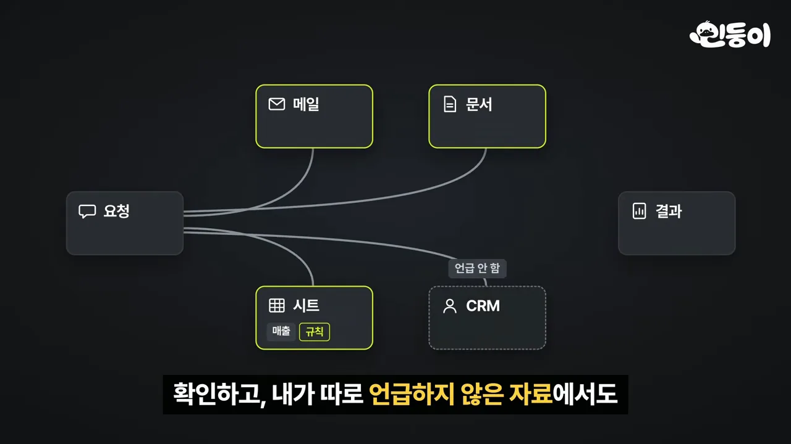
피할 디자인 요소를 하나씩 적어요
두 번째는 웹사이트 디자인이에요. Opus는 디자인 방향을 정해 주지 않으면 익숙한 기본 스타일로 돌아가요. "AI가 만든 티 나지 않게 해 줘"라고 해도 무엇을 바꿀지 모호해서, 기본 스타일 하나를 다른 기본 스타일로 바꿀 뿐이에요. 아래 공식 문서 화면이 이 내용이고, 그 밑 회색 상자가 가이드의 예시 프롬프트예요.
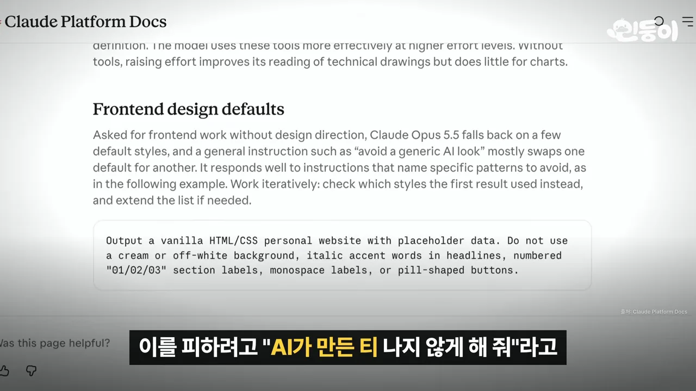
영상은 이 목록을 실제 사이트에 겹쳐 보여 줘요. 크림색 배경의 'Lumen' 시안에서 제목 속 기울임꼴 '현실', 알약 모양 '무료로 시작하기' 버튼, 01·02·03 섹션 번호에 빨간 X가 붙어 있어요. 이렇게 크림색 배경, 기울임꼴 강조 글씨, 01·02·03 형식 섹션 번호, 알약 모양 버튼을 쓰지 말라고 콕 집어 말하면 Opus가 잘 따라요.
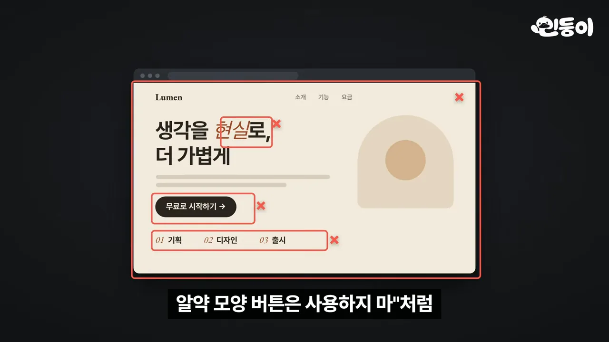
두 가이드 한눈에 비교
영상 끝의 비교표예요. 빈칸(—)은 그 모델 가이드가 따로 다루지 않은 지시예요. 같은 Fable에서 코드 정리에 잘 듣던 문장이 괜한 수정까지 늘리듯, 지시마다 효과가 모델과 작업에 따라 달라요.
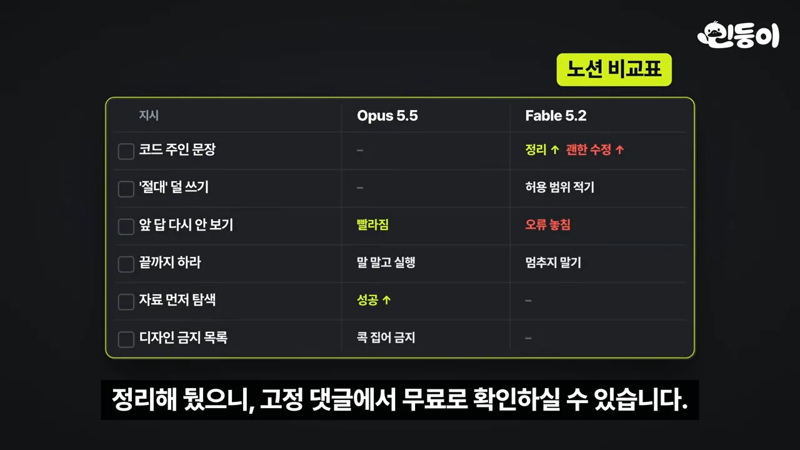
| 지시 | Opus 5.5 | Fable 5.2 |
|---|---|---|
| 코드 주인 문장 | — | 정리 늘지만 괜한 수정도 늘어요 |
| '절대' 덜 쓰기 | — | 허용 범위를 적어요 |
| 앞 답 다시 안 보기 | 답이 빨라져요 | 오류를 놓쳐요 |
| 끝까지 하라 | 말만 말고 실행 | 멈추지 말기 |
| 자료 먼저 탐색 | 성공률이 올라가요 | — |
| 디자인 금지 목록 | 콕 집어 금지 | — |
그래서 영상의 결론은 소개한 문장을 무조건 추가하지 말고, 맡기려는 작업에 맞춰 필요한 지시만 골라 쓰자는 거예요. 영상 속 한국어 프롬프트와 비교표는 채널의 고정 댓글에 노션 링크로 올라와 있어요.